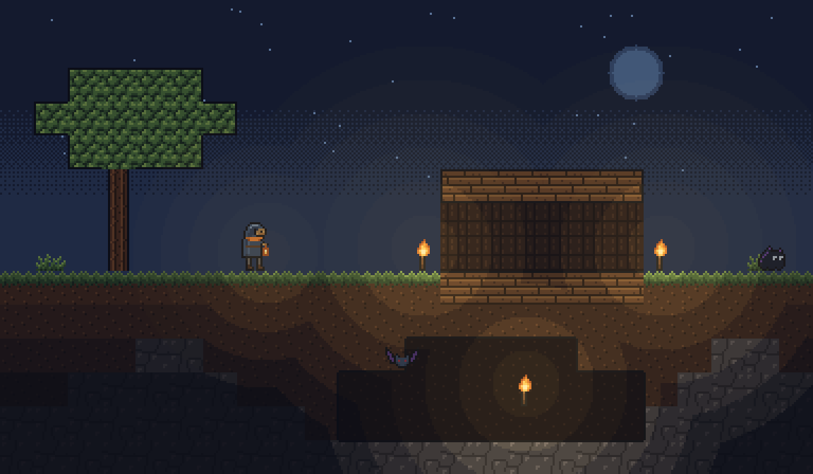
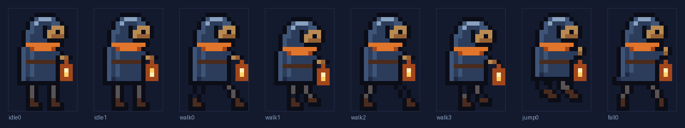
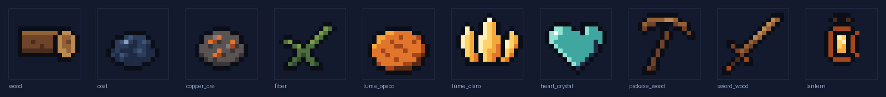

Seu primeiro abrigo.
Iluminar é criar segurança. Tochas e lanternas fazem parte de um mundo em que explorar, sobreviver e construir dependem da luz.
Sandbox 2D em desenvolvimento
Este é Lumeterra. Cave cada vez mais fundo, construa um refúgio e encontre a luz capaz de reacender o mundo.
Windows 10/11 x64 · Beta gratuito disponível

O mundo de Lumeterra
Há gerações, o sol começou a enfraquecer. Agora, a superfície vive num crepúsculo permanente. Onde a luz não chega, a escuridão ganha vida: surgem as Sombras.
Você é um Faroleiro diante de um Farol apagado. No subsolo, veios de Lume guardam a luz do antigo sol. A visão do jogo é transformar cada descida em uma descoberta e cada construção em um lugar para a vida voltar.
A jornada está em desenvolvimento. Os sistemas abaixo descrevem a visão de design e serão entregues por etapas.
Iluminar é criar segurança. Tochas e lanternas fazem parte de um mundo em que explorar, sobreviver e construir dependem da luz.
O Farol guia a progressão: a proposta é fortalecê-lo com cristais de camadas mais profundas, ampliar o refúgio e atrair moradores.
Um ciclo de escuridão ameaça a superfície. O plano é fazer de cada Maré um teste para suas reservas de luz e suas defesas.
O mesmo recurso que ilumina também poderá alimentar armas e evoluir o Farol. Gastar agora ou guardar para a próxima descida?
Arte em desenvolvimento
Arte atual do projeto.
Visual sujeito a mudanças.


Roadmap
Migração para C++20 em andamento. Estes são os marcos planejados; não representam recursos já disponíveis no beta e não têm datas anunciadas.
Base técnica, mundo, movimento, cavernas, mineração e construção. Em migração e desenvolvimento.
Inventário, crafting, tochas, minérios e primeiros inimigos. Planejado.
Maré Escura, combate, evolução do Farol, casas e Ferreira. Planejado.
Mãe-Raiz, salvar e carregar, menus, arte e balanceamento. Planejado.
Beta para Windows
O primeiro beta para Windows já está disponível. Baixe a versão mais recente na página oficial de downloads.
Baixar o betaWindows 10/11 · x64 · Teclado e mouse
Download gratuito: baixe o arquivo .zip, extraia tudo e execute lumeterra.exe. Um instalador para Windows chega nas próximas versões.
Aviso do Windows: o executável ainda não tem assinatura digital, então o SmartScreen pode avisar. Clique em “Mais informações” e depois em “Executar assim mesmo”.
Requisitos adicionais de processador, memória e vídeo ainda não foram definidos.
Lumeterra-<versão>-windows-x64.zip.SmartScreen: o executável não é assinado e o Windows pode exibir um aviso. Confira a origem do pacote antes de executar. Se confiar no arquivo, a opção “Mais informações” → “Executar assim mesmo” pode estar disponível.
Referência do design. A disponibilidade depende da versão; confira também as notas do beta.